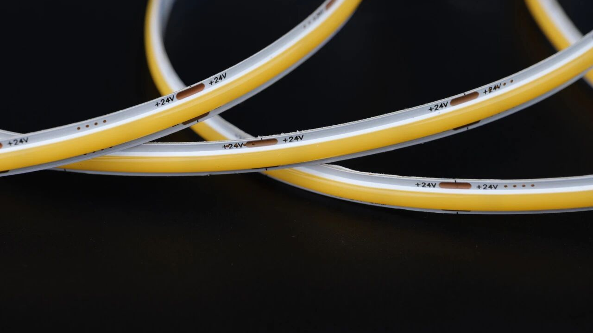
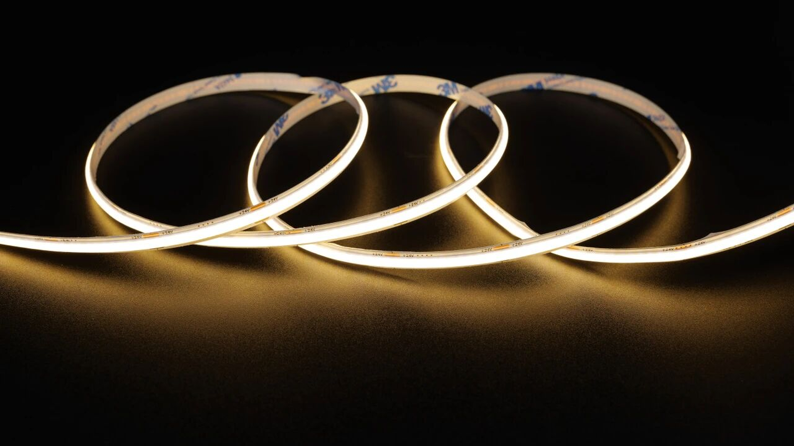
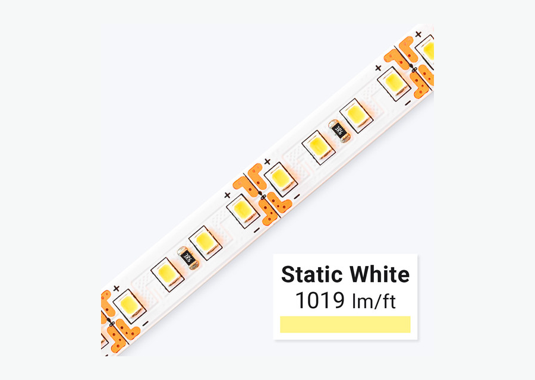

Quando escolher COB
Para sancas, perfis e projetos premium onde a linha deve parecer contínua.
sem pontosperfilpremium
Ver detalhes

Blog • comparação
A escolha entre fita LED COB e fita LED comum depende do efeito visual, orçamento e aplicação. COB é forte quando o projeto exige linha contínua e menos pontos aparentes. A fita SMD comum ainda é útil em instalações simples, decoração econômica e locais onde o ponto de LED não incomoda.
Keyword map
Principal: fita led cob ou fita led comum. Secundárias: fita led cob vs fita led, fita led cob é melhor, diferença fita led cob e smd, fita led sem pontos. Esta página segue a lógica do mapa: uma URL canônica por cluster, sem separar variações que não tenham intenção própria.
Modelos COB
Estrutura de categoria inspirada em sites líderes: navegação clara, cards por variação, guia técnico, aplicações e FAQ, com texto original em português do Brasil.

Para sancas, perfis e projetos premium onde a linha deve parecer contínua.

Para aplicações simples, orçamento enxuto e locais onde a fita fica bem escondida.

Para melhorar acabamento, proteção, dissipação e uniformidade da luz.

Guia técnico
Use COB quando o comprador percebe diretamente a linha de luz, como em sanca, perfil aparente, marcenaria premium e vitrine. Use fita comum quando a fita fica bem escondida, o orçamento é mais sensível ou a instalação é decorativa simples. Em ambos os casos, a fonte correta, a tensão, o perfil e os conectores influenciam mais no resultado final do que apenas o tipo de fita.
Aplicações
Aplicações alinhadas aos clusters do mapa: sanca/gesso, cozinha/armário, loja/vitrine, quarto e ambientes comerciais.
COB geralmente entrega acabamento mais contínuo.
Planejar aplicaçãoCOB com perfil cria linha mais limpa em marcenaria.
Planejar aplicaçãoSMD comum pode atender quando a fita fica oculta.
Planejar aplicaçãoFAQ técnico
Respostas curtas para intenção comercial e dúvidas de especificação antes do orçamento.
Não. Ela é melhor para uniformidade visual, mas pode não ser necessária em instalações simples.
Em projetos premium, muitas vezes sim. Em projetos econômicos, SMD ainda pode fazer sentido.
Não é obrigatório, mas melhora acabamento e ajuda a proteger a fita.
COB é a escolha mais segura quando o objetivo é luz indireta contínua e acabamento premium.
Cotação B2B
Envie metragem, tensão, temperatura de cor, ambiente, perfil desejado e prazo. A resposta deve indicar fita, fonte, perfil, conector e controle compatíveis.